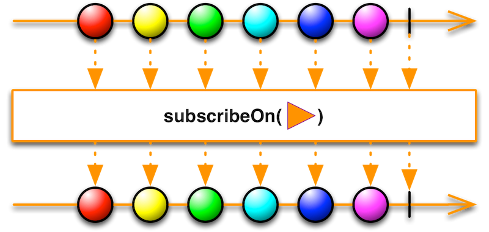
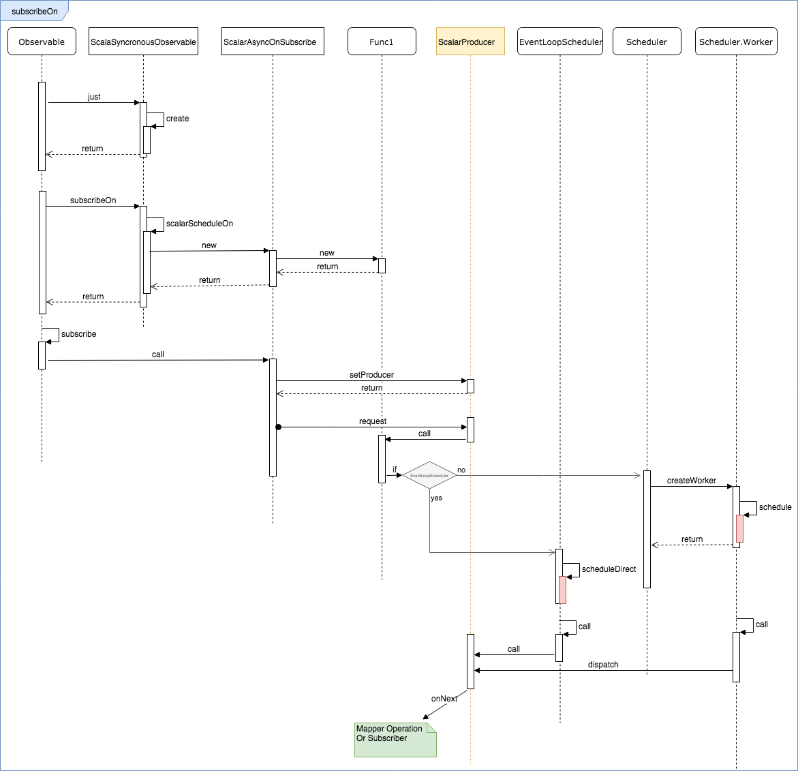
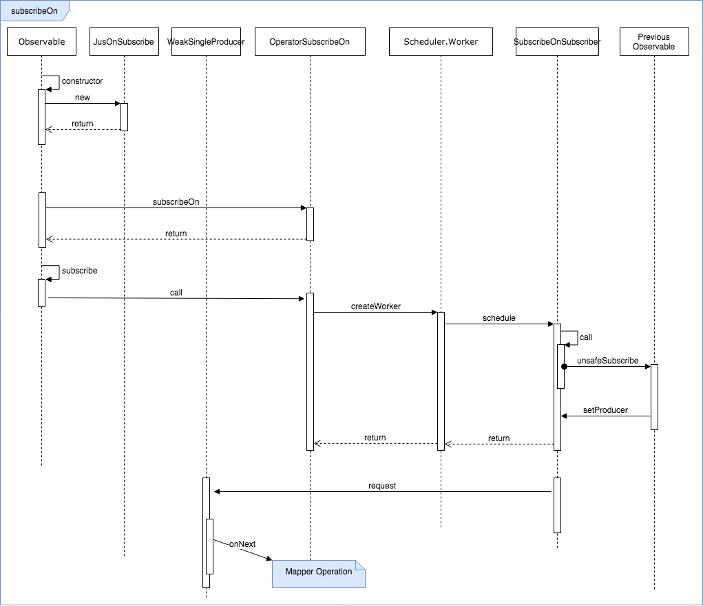
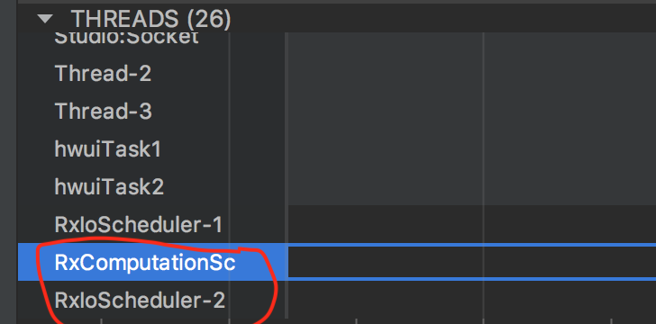
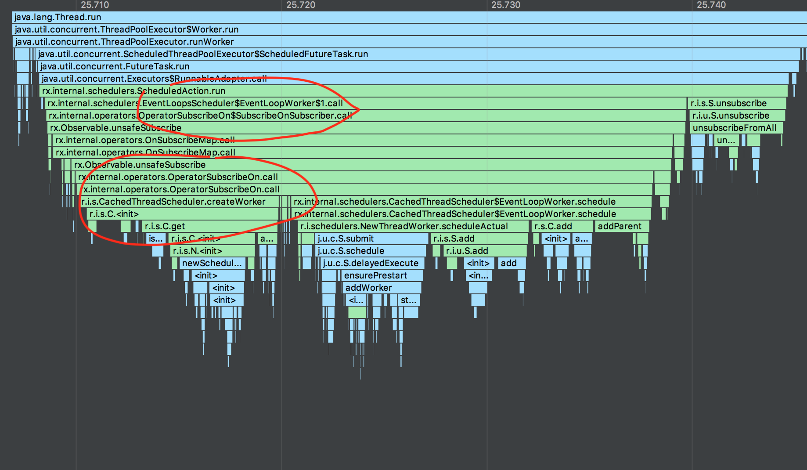
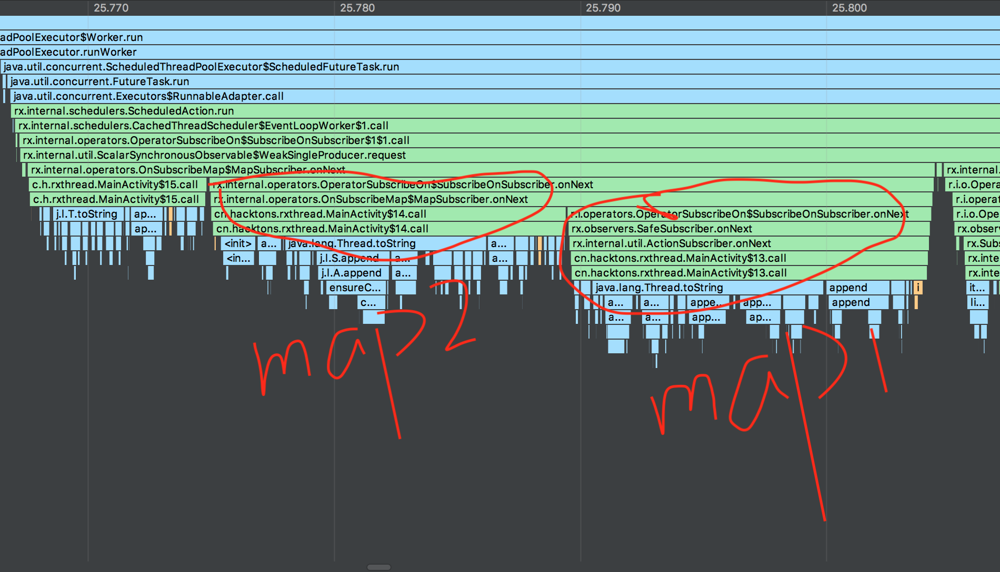

subscribeOn挂载机制
通过subscribeOn可以指定Observable的事件发射的线程，同时在显式修改线程之前，Observable上所有操作符都执行在这个线程。

在调用subscribeOn后，类似其他操作符，第一步都是创建一个OnSubscribe对象，然后在subscribe时触发它的call方法。
subscribeOn的调用流程中有很多分支路径，这也增加了我们分析的复杂度。它根据创建的Observable是否是单事件发射，可以划分为两个条件分支
- ScalarAsyncOnSubscribe作为OnSchedule实现类，并传入匿名Func1的代理OnSubscribe
- OperatorSubscribeOn作为OnSubscribe实现类
将进一步当使用ScalarAsyncOnSubscribe时，还将根据当前的Scheduler是否为EventLoopScheduler，差异化实现Func1
- EventLoopScheduler的一个具体使用者是Schedulers.computation()，即计算型的调度器
- EventLoopScheduler作为一种循坏调度器，他所具有的最并发任务数/大线程数是CPU核心数
- 两种调度器的差异在于提交任务的处理情况，循坏调度器把任务放入现有的N个并行队列之一；
- 其他调度器，”创建/复用“串行任务执行器Scheduler.Worker，然后把任务提交给他；
挂载流程-ScalarAsyncOnSubscribe
我们举一个简单的例子，看一下他的执行情况
Observable.just(10).subscribeOn(Schedulers.io()).map {
val p = Process.getThreadPriority(0)
Log.i("Thread", "map1=>" + Thread.currentThread().toString() + ", p=" + p)
"priority=$p"
}.subscribe { /*TODO*/ }
下面这张图抽取的单事件ScalarAsyncOnSubscribe的执行情况，图很复杂，简单看一下就行，千万不要去记忆：）

我们总结这种情况下：
单事件的Observable通过subscribeOn挂载调度器时，会创建匿名的Func1对象，在call方法内部把任务的执行提交给调度器，此时不会执行任务；
当subscribe调用后，会立刻创建一个ScalarAsyncOnSubscribe对象，并且在call内部触发setProducer，这个方法会执行传入Producer对象的request方法，从而触发Func1的执行；
- Func1会被挂载在我们指定的调度器上执行，同时Func1内的call方法最终执行了Observable的事件发射/操作符运算
到这里我们才算分析了单事件的一个分支，接着看OperatorSubscribeOn的实现逻辑。
什么时候会触发执行OperatorSubscribeOn呢？
从代码上我们知道，是通过判断Observable实现类来决定的，
public final Observable<T> subscribeOn(Scheduler scheduler, boolean requestOn) {
if (this instanceof ScalarSynchronousObservable) {
return ((ScalarSynchronousObservable<T>)this).scalarScheduleOn(scheduler);
}
return unsafeCreate(new OperatorSubscribeOn<T>(this, scheduler, requestOn));
}
通过测试分析，即使数据源是单事件的，一旦经过了操作符如map处理，返回的Observable就不再是ScalarSynchronousObservable。所以不要错误认为凡是单事件源调用subscribeOn都会触发第一个条件。
挂载操作符-OperatorSubscribeOn
还是上面的例子，我们把map调个位置，可以分析OperatorSubscribeOn的情况：
Observable.just(10).map {
val p = Process.getThreadPriority(0)
Log.i("Thread", "map1=>" + Thread.currentThread().toString() + ", p=" + p)
"priority=$p"
}.subscribeOn(Schedulers.io()).subscribe { /*TODO*/ }
在前面的链式调用分析中，我们知道每一个操作符都会返回新的Observable实例对象，因此可以预见到OperatorSubscribeOn相比ScalarAsyncOnSubscribe，他需要关注操作符之前的触发动作。

在跟踪调用链的时候，会发现，Rx的链式操作符是反向调用，比如A->B->C顺序三个操作符，它在执行C时先触发前一个Observable，触发B的执行，在B执行时又触发A的执行，最终任然实现的是A->B->C的调用关系。
这个当然也不是什么特有逻辑OKHttp的链式拦截器调用也有类似逻辑。
总结一下这种情况：
执行subscribe后，rx开始逆向执行所有的操作符，针对subscribeOn在操作符之后的情况；
创建一个OperatorSubscribeOn对象，在call方法中调用Scheduler并创建Worker，将任务提交；
- 任务执行时将首先触发传入的上一级Observable的订阅调用，最终通过Producer的request触发Subscriber的onNext执行；
在上面两种情况中，触发任务流转的基本都是Action1的call方法和Producer的request方法。由于嵌套层数非常多多，Rx的链式流程分析，可以结合断点调试观测。
多次调用subscribeOn分析
现在我们已经简单分析过了subscribeOn的执行逻辑，但是有一个疑问还是没有得到解答：
为什么subscribeOn在实际使用过程中只有第一次调用时生效，后续调用都没有作用?
通过单纯的调用链分析，很容易把思维套进代码中，同时由于rx中存在大量的"重复调用"，一个类在整个流程汇总被实例化多次，被不同场景触发执行，有时根本不知道是哪个流程触发了执行。
我们结合Profiler，通过Trace Method来分析。
Observable.just(10).map {
val p = Process.getThreadPriority(0)
Log.i("Thread", "map1=>" + Thread.currentThread().toString() + ", p=" + p)
"priority=$p"
}.subscribeOn(Schedulers.io()).map { s ->
val p = Process.getThreadPriority(0)
Log.i("Thread", "map2=>" + Thread.currentThread().toString() + ", p=" + p)
"$s, map2"
}.subscribeOn(Schedulers.computation()).subscribe {
val p = Process.getThreadPriority(0)
Log.i("Thread", "subscribe=>" + Thread.currentThread().toString() + ", p=" + p)
}
我们通过两个map，两个subscribeOn操作进行观察。
执行后得到如下日志，可知两个map操作均在在RxIoScheduler-2线程上执行，Computation没有对map产生"作用"
I/Thread: map1=>Thread[RxIoScheduler-2,5,main], p=0
I/Thread: map2=>Thread[RxIoScheduler-2,5,main], p=0
I/Thread: subscribe=>Thread[RxIoScheduler-2,5,main], p=0
虽然map操作没有在Computation线程上，但是Computation线程还是生成了，如图下图： 
进一步，看下Computation线程具体做了什么事情：
- 在分析调度器时我们已经知道EventLoopsScheduler是Computation调度器的实现类
- EventLoopsScheduler（Computation调取器）上面提交了一个任务，最终触发了CachedThreadScheduler（IO调度器）创建Worker

io线程上可以看到，执行了map动作 
根据线程的实例化和方法调用情况，我们可以进一步修正：
多次调用subscribeOn，每次的调度器都是有”效果“的，内部会创建对应的线程，差异在于创建的线程只是用于触发前一个subscribeOn的调度器Worker创建
要理解subscribeOn的效果最终要回归到这个操作符的实现类OperatorSubscribeOn和 SubscribeOnSubscriber
我们知道，一个Observeable被订阅会直接触发他的OnSubscribe成员的call方法，对应到subscribeOn的Observable实现，他的OnSubscribe实现类就是OperatorSubscribeOn，所以被触发就是执行OperatorSubscribeOn的call方法：
@Override
public void call(final Subscriber<? super T> subscriber) {
final Worker inner = scheduler.createWorker();
SubscribeOnSubscriber<T> parent = new SubscribeOnSubscriber<T>(subscriber, requestOn, inner, source);
subscriber.add(parent);
subscriber.add(inner);
inner.schedule(parent);
}
他做了一件事情，根据调度器创建Worker，然后执行包裹后的SubscribeOnSubscriber。注意这里没有直接执行任务，进一步看SubscribeOnSubscriber的实现
有一段核心代码如下：
@Override
public void setProducer(final Producer p) {
actual.setProducer(new Producer() {
@Override
public void request(final long n) {
if (t == Thread.currentThread() || !requestOn) {
p.request(n);
} else {
worker.schedule(new Action0() {
@Override
public void call() {
p.request(n);
}
});
}
}
});
}
setProvider本质就是指定线程，然后开始发射事件，这也是subscribeOn的作用点，他生效于事件发射，在不显示改变线程前都在这个线程上执行所以操作符。
多次调用subscribeOn后，将会出现递归设置setProvider，根据Observable的链式调用，最后设置的subscribeOn最先执行，反过来说最早设置的是最终事件发射的调度器。
小结
现在我们总结一下subscribeOn的知识点：
- subscribeOn对应的操作符实现类是OperatorSubscribeOn
- OperatorSubscribeOn的核心逻辑在于递归设置的setProvider方法
- subscribeOn生效于第一次设置的调度器，其后的多次设置并不影响最终执行线程
- subscribeOn配置了事件发射的线程，在显式修改线程之前，Observable上所有操作符都执行在这个线程